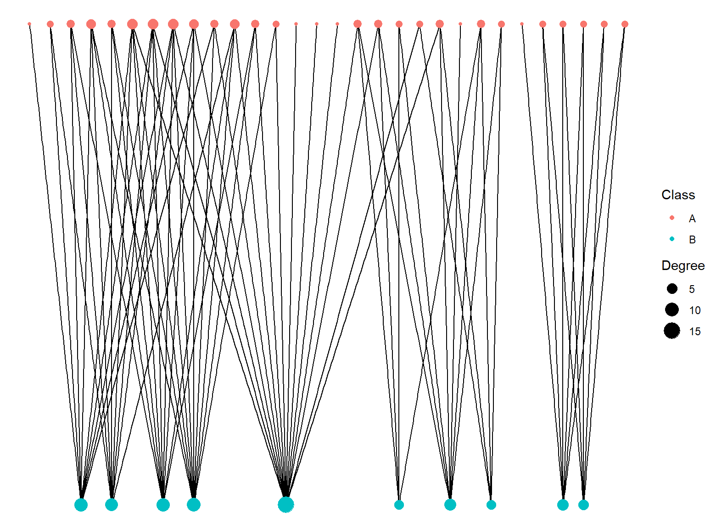
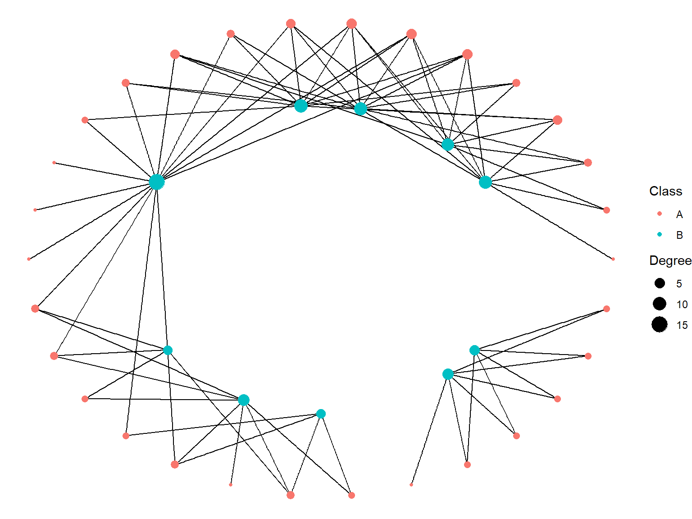
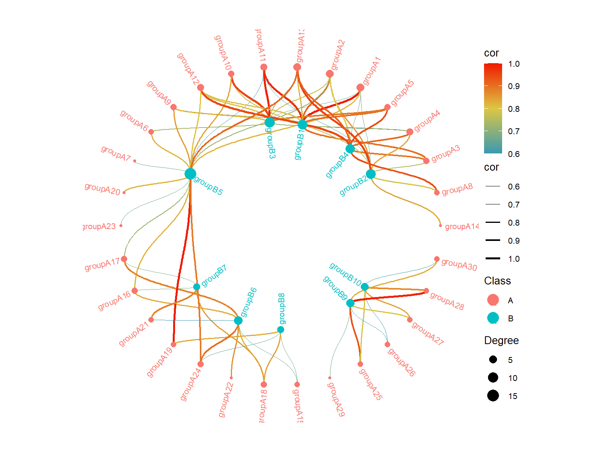

A <- paste0("groupA", 1:30)
B <- paste0("groupB", 1:10)
node <- tibble::tibble(
name = c(A, B),
type = c(rep(FALSE, length(A)), rep(TRUE, length(B))),
Class = c(rep("A", length(A)), rep("B", length(B)))
)
set.seed(123)
connnectNum <- vapply(
seq_along(A),
function(x) {
sample(1:7, 1)
},
FUN.VALUE = 1
)
getB <- function(a, b, size) {
tibble::tibble(
from = a,
to = sample(b, min(size, length(B)), replace = TRUE),
cor = sample(60:100, min(size, length(B)), replace = TRUE) / 100
)
}
edge <- purrr::imap(
A, function(x, i) {
if (i < 15) {
getB(x, B[1:5], connnectNum[i])
} else if (i < 25) {
getB(x, B[5:8], connnectNum[i])
} else {
getB(x, B[9:10], connnectNum[i])
}
}
) |>
purrr::list_rbind()双环网络图
ggraph
双环网络图的使用情景：图是二分图，即：A组与B组之间元素有关联，但组内元素没有关联；组间元素的关联呈现出聚集状。可以使用igraph::is_bipartite(g)进行二分图的判断。
生成示例数据
在生成node时，添加了额外的列type，这是识别二分图的标志，我们可以手动添加，也可以使用igraph::V(g)$type <- bipartite_mapping(g)$type来添加。
创建网络图对象，并添加度信息
g <- igraph::graph_from_data_frame(edge, vertices = node, directed = FALSE) |> # igraph 生成对象
igraph::simplify(remove.multiple = TRUE, remove.loops = TRUE, edge.attr.comb = "first") |> # 使用igraph函数去除重复边，去除自环，边属性保留第一个，因为都一样
tidygraph::as_tbl_graph() |> # tidygraph 生成对象
tidygraph::activate("nodes") |>
dplyr::mutate(Degree = tidygraph::centrality_degree()) # 生成节点度信息检查是否是二分图
igraph::is_bipartite(g)
#> [1] TRUE绘制二分图
注意：在设置type列时，值为TRUE的节点位于下方，值为FALSE的节点位于上方。这在转换极坐标系时用于区分内外圈，TRUE的节点位于内圈，值为FALSE的节点位于外圈。
p <- ggraph::ggraph(g, layout = "bipartite") +
ggraph::geom_edge_link() +
ggraph::geom_node_point(
ggplot2::aes(color = Class, size = Degree),
shape = 19,
alpha = 1
) +
ggplot2::theme_void()
p
转换成极坐标系
绘制双环网络图
p <- ggraph::ggraph(g, layout = "manual", x = coords$x, y = coords$y) +
ggraph::geom_edge_link() +
ggraph::geom_node_point(
ggplot2::aes(color = Class, size = Degree),
shape = 19,
alpha = 1
) +
ggplot2::theme_void()
p
稍稍美化一下图
pal <- colorRampPalette(c("#3a9ab2", "#ddc744", "#f11b00"))(100)
p <- ggraph::ggraph(g, layout = "manual", x = coords$x, y = coords$y) +
ggraph::geom_edge_diagonal(
ggplot2::aes(color = cor, edge_width = cor)
) +
ggraph::geom_node_point(
ggplot2::aes(color = Class, size = Degree),
shape = 19,
alpha = 1
) +
ggraph::geom_node_text(
ggplot2::aes(
x = ifelse(Class == "B", x * 0.95, x * 1.03),
y = ifelse(Class == "B", y * 0.95, y * 1.03),
label = name,
hjust = ifelse(Class == "B", "inward", "outward"),
angle = -((-ggraph::node_angle(x, y) + 90) %% 180) + 90,
colour = Class
),
repel = FALSE,
size = 8 / ggplot2::.pt
) +
ggplot2::scale_color_manual(values = c("A" = "#f8766d", "B" = "#00bfc4")) +
ggplot2::scale_size_continuous(range = c(1, 5)) +
ggraph::scale_edge_color_gradientn(colours = pal) +
ggraph::scale_edge_width_continuous(range = c(0.1, 1)) +
ggplot2::scale_x_continuous(expand = ggplot2::expansion(mult = .1)) +
ggplot2::scale_y_continuous(expand = ggplot2::expansion(mult = .1)) +
ggplot2::coord_fixed() +
ggplot2::guides(
edge_color = ggraph::guide_edge_colorbar(order = 1),
edge_width = ggplot2::guide_legend(order = 2, override.aes = list(color = "black")),
color = ggplot2::guide_legend(order = 3, override.aes = list(size = 5)),
size = ggplot2::guide_legend(order = 4)
) +
ggplot2::theme_void() +
ggplot2::theme(
plot.margin = ggplot2::margin(1, 1, 1, 1, "cm"),
legend.text = ggplot2::element_text(size = 8),
legend.title = ggplot2::element_text(size = 10)
# legend.position = c(0.5, 0.5),
# legend.box = "horizontal"
)
p